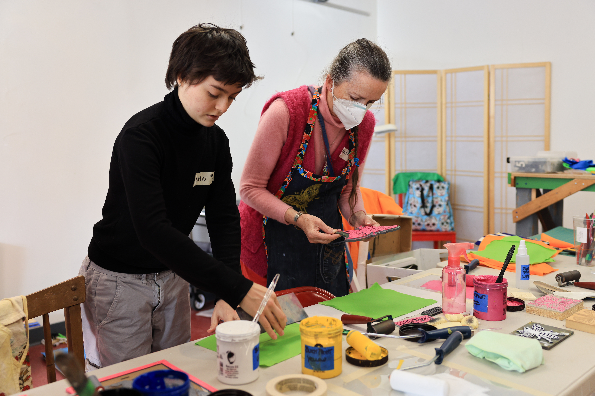

From arrests for blocking traffic to disruptions in meetings and climbing substation fences, whenever the "Extinction Rebellion" Boston chapter makes headlines, it is almost always portrayed with a rebellious and unruly image.
However, on the flip side of this perceived 'extreme' and 'aggressive' stance, the organization also participates in some 'unexpected,' peaceful, and community-centered activities.
On November 24, 2023, Black Friday, Extinction Rebellion organized a "Buy Nothing Day Party" at Calvary United Methodist Church in Arlington—a free goods exchange and donation event. The organizers emphasized, "Instead of celebrating gross consumerism, celebrate sustainability and community!"
Arlington, MA: November 24, 2023 - The dance hall on the second floor of Calvary United Methodist Church is filled with people who have come to attend the Buy Nothing Day party, and attendees are wandering around long tables, searching for items that catch their interest. In addition to members of Extinction Rebellion, many residents from Arlington and the surrounding area also took part in the event. (Chang Liu)
Fan Lu, an Arlington resident, said that she had only read about the Extinction Rebellion on the news before, and she thought it was a somewhat radical organization. However, she noted that today's event was a positive, friendly, and harmless event, so she was willing to come. The organizer emphasized during the speech that many participants are not necessarily members of Extinction Rebellion, stating, "Here in our community, even some that haven't set out necessarily to be climate activists, have a vision of what is a more profound life than the commercialism of the world around us."
Arlington, MA: November 24, 2023 - One of the organizers of this event takes the stage to deliver a speech celebrating "Buy Nothing Day." He stated, "We find ourselves on the day when most of commercial society tells us to buy more and more. And instead, we're here buying nothing." The event encouraged participants to bring surplus items from their homes and gift them to those in need. (Chang Liu)Arlington, MA: November 24, 2023 - Arlington resident Fan Lu (on the right, wearing a blue jacket) comes across a lady who also speaks Chinese, and then the two exchange contact information. Fan learned about the event through the Arlington community's Facebook group, and many of the participants present today were from Fan’s neighborhood.
Arlington, MA: November 24, 2023 - After the party, the two main organizers are tidying up the dance hall and sorting through the remaining items. Participants brought various items such as toys, clothing, jewelry, appliances, books, artwork, and so on. Items left at the hall will be donated or recycled after categorization. (Chang Liu)
In addition to non-violent direct action, Extinction Rebellion attracts attention for its colorful and artistic advocacy.
They hold an art studio almost every week at the Puppet Free Library in Back Bay. Promotional items needed for the event are handmade by the members. Anna Pancoast, an active member of the Art Working Group, organized the first art studio in Arlington on October 28th.
Arlington, MA: November 25, 2023 - From 10:00 to 12:00, members of Extinction Rebellion engage in manual craftsmanship at Mystic Open Studio in Arlington, creating promotional materials for future events, including flags, streamers, and windsocks. This new art studio in Arlington was planning to establish itself as a fresh hub for artistic creation, intending to host monthly events. (Chang Liu)
On November 25th, about a dozen members met again at the Mystic Open Studio in Arlington. This is a new location just starting out, and considering the storage of tools and materials, Anna decided to start with making the most basic flags first.
Arlington, MA: November 25, 2023 - Anna Pancoast, the organizer of the event, irons the fabric needed for the banners. Many members of Extinction Rebellion, including Anna, reside in the Arlington area. This inspired Anna to contemplate the idea of establishing a new art studio for the Arlington community. (Chang Liu)Arlington, MA: November 25, 2023 - At the check-in area, Extinction Rebellion promotional materials are displayed. During each event, members bring promotional items to distribute to participants. (Chang Liu)

Arlington, MA: November 25, 2023 - Melvin Leventhal (left, wearing a black sweater), a high school student residing in Arlington, is a new face at the art studio. Hoping to become a member of Extinction Rebellion, he came here to engage with the members. "I've recently started to commit to a vegetarian lifestyle, hoping I can do more for environmental conservation," Melvin shared his thoughts with the members and inquired with organizer Anna about the possibility of more similar events in Arlington in the future. (Chang Liu)Arlington, MA: November 25, 2023 - Extinction Rebellion member Tobie (right) assists Mery (left) in resolving an issue with the iron. At the art studio, participants not only engage in creating promotional materials but also have the opportunity to craft their artwork. Mery's earrings, for example, were crafted in a previous art studio session. (Chang Liu)
These flags are prepared for many future events, such as several events recently organized in response to the 2023 United Nations Climate Change Conference (COP28). "COP28 will inevitably be one of the year's biggest disappointments", Extinction Rebellion is taking a stark opposition to the COP28 and actively invites interested parties to get involved. Communications Director Jamie McGonagill took the initiative to mention a potential concern, "We do not announce civil disobedience actions on our website, so anything you see there is open attendance to anyone."
Boston, MA: November 30, 2023 - A member of the Red Rebels quietly leaves the scene after the event against COP28 near the State House. Communications Director Jamie McGonagill explained that the Red Rebels’ members are not professional actors; they are simply members of Extinction Rebellion who are enthusiastic about playing as Red Rebels. (Chang Liu)
Regarding the reputation of being "radical" and "troublesome," Jamie McGonagill stated, "In our daily lives, we are a group of gentle people. Like you see at parties and art studios. Many of my close friends are in Extinction Rebellion, and our members include teachers, researchers, artists... We are just too afraid, too afraid that no one will pay attention to climate change, no one will value the future."